Plot
In 1929, Porco Rosso, an Italian World War I fighter ace and freelance bounty hunter who has been cursed to have a pig’s head, fends off an attack on an ocean liner by airborne pirates. Porco treats himself to dinner at the Hotel Adriano, which is run by his friend Gina.
At the hotel, the heads of the pirate gangs are contracting Curtis, an arrogant and ambitious American ace, to assist them in their next attacks. Curtis falls in love with Gina on the spot, but is frustrated to see his declarations rebuffed and her affection for Porco. After successfully executing a pirating mission, Curtis tracks down Porco, who is flying to Milan to have his plane serviced, and shoots him down as he experiences an engine outage, claiming to have killed him. Porco survives, though his plane is heavily damaged. Porco continues the trip by train with the remains of the plane, much to the irritation of Gina, who reminds him that there is a warrant for his arrest in Italy.
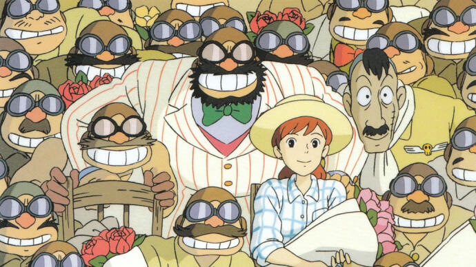Porco arrives discreetly in Milan to meet Piccolo, his mechanic. He learns that Piccolo's sons have emigrated to find work elsewhere due to the Great Depression, and much of the engineering will have to be carried on by his young granddaughter Fio. In addition to this, the plane is rebuilt exclusively by Piccolo's female relatives, with even old grandmothers helping, in order to earn money. Porco is initially skeptical of Fio's abilities as a mechanic, but after seeing her dedication in the repair project he accepts her as a competent engineer. Once Porco's plane is finished, Fio joins him on his flight home, with the justification that if the secret police arrest the team, they can say that Porco forced them to help and took Fio as a hostage. Stopping off to refuel on the way, Porco discovers that the new fascist government is beginning to hire seaplane pirates for their own use, thus putting him out of business.
Back at the Hotel Adriano, Curtis proposes to Gina but she turns him down, saying that she is waiting for Porco Rosso. Upon returning home, Porco and Fio are ambushed by the pirates, who threaten to kill Porco and destroy his plane. Fio talks them out of it, but Curtis appears and challenges Porco to a final duel. Fio makes a deal with him declaring that if Porco wins, Curtis must pay off his debts owed to Piccolo's company, and if Curtis wins, he may marry her.
That night, while preparing shells for the dogfight, Porco tells Fio a story from World War I. Two days after Gina's first wedding to his friend Bellini, his squadron was attacked by Austro-Hungarian aircraft. Overwhelmed and unable to save his fellow pilots he entered a cloud to evade his pursuers. He recalls blacking out and awakening to find himself in complete stillness above the clouds, with a silver band shimmering high in the distant sky. Allied and enemy aircraft, flown by the airmen who died in the dogfight—Bellini included—rise out of the cloud and fly upward towards the band, ignoring him. Porco soon sees that the band is in fact thousands of planes flying together. He blacks out again, and awakens flying low over the sea, alone. As she falls asleep, Fio (and the viewer) briefly see Marco's true face instead of the pig.
The next day, the duel is arranged and a large crowd gathers to observe. The indecisive and long dogfight between Porco and Curtis soon devolves into a bare-knuckle boxing match when both planes' machine guns jam. As they fight, Porco accuses Curtis of being a womaniser, but Curtis responds that he is worse- Fio adores him, and Gina is waiting on him to the exclusion of any other man, but he fails to reciprocate either of them, especially Gina. This comes as such a shock to Porco that Curtis is able to knock him down, only for Porco to be saved by a pirate referee signaling the end of a round. The fight ends with both combatants knocking each other out and falling under the shallow water. Gina arrives and calls out to 'Marco' (Porco), who rises first and is declared the winner. She warns the crowd that the Italian air force has been alerted and are on their way, and invites everyone to regroup at her hotel. To Gina's frustration, Porco hands Fio over to Gina, requesting that she look after her, and turns away. Just before Gina's plane takes off, Fio leans out and gives Porco a kiss.
As the crowd leave, Porco volunteers to lead the air force away and invites Curtis to join him. Curtis reacts with surprise and asks Porco to turn around, suggesting that—like Fio—he had briefly seen Marco's true face. In the epilogue, Fio narrates as she flies in a jet seaplane that in the end Porco outflies the Italian air force and remains at large; Fio herself became president of the Piccolo company, which is now an aircraft manufacturer; Curtis became a famous actor; and the pirates continued to attend the Hotel Adriano in their old age. She does not divulge whether Gina's hope about Porco Rosso was ever realized, saying it is their secret. However, a red plane can be seen docked by Gina's garden as the jet flies over the hotel.
After the credits, a familiar red seaplane soars in the sky before disappearing into the clouds.
Characters
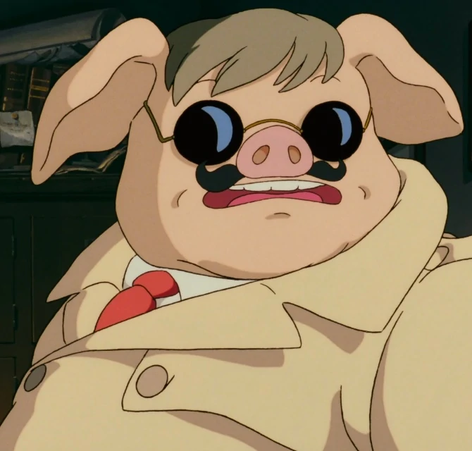
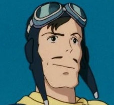
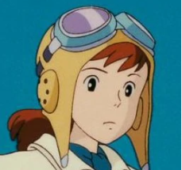
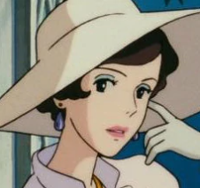

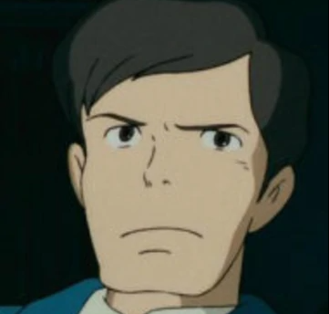
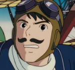
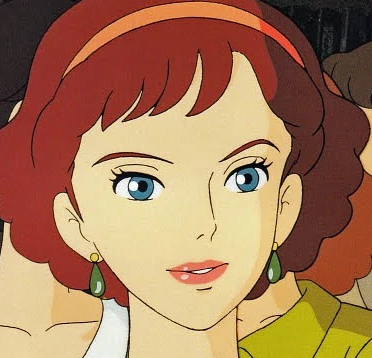
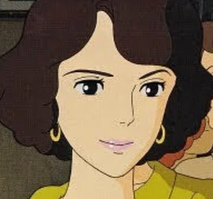
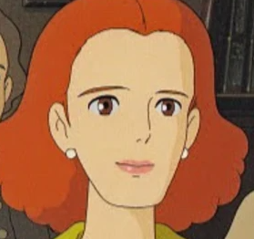
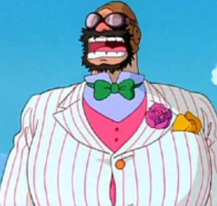
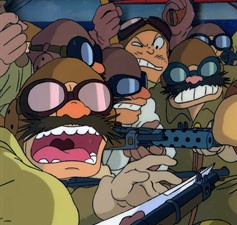
Voices
| Character | Japanese | English | |
|---|---|---|---|
| Japan Airlines | Walt Disney Pictures | ||
| Rosso / Marco Pagot (Marco Rossolini in the dub) | Shūichirō Moriyama | Patrick Harlan | Michael Keaton |
| Donald Curtis | Akio Ōtsuka | Greg Dale | Cary Elwes |
| Fio Piccolo | Akemi Okamura | Lynn Eve Harris | Kimberly Williams-Paisley |
| Madame Gina | Tokiko Kato | Faith Bach | Susan Egan |
| Mr. Piccolo | Sanshi Katsura | Clay Lowrey | David Ogden Stiers |
| Ferrarin (Ferrari in the dub) | Mahito Tsujimura | Julian Macfarlane | Tom Kenny |
| Bellini | |
|
Pat Fraley |
| Giliora | - | - | - |
| Sandra | - | - | - |
| Marietta | - | - | - |
| Capo | Tsunehiko Kamijō | |
Brad Garrett |
| Mamma Aiuto Gang Members | Reizō Nomoto | |
Bill Fagerbakke |
| Osamu Saka | |
Kevin Michael Richardson | |
| Yuu Shimaka | Jeff Manning | Frank Welker | |
Production
The film was originally planned as a short in-flight film for Japan Airlines based on Hayao Miyazaki's manga The Age of the Flying Boat, but grew into a feature-length film. The outbreak of war in Yugoslavia cast a shadow over production and prompted a more serious tone for the film, which had been set in Dalmatia. The airline remained a major investor in the film, and showed it as an in-flight film well before its theatrical release. Due to this, the opening text introducing the film appears simultaneously in Japanese, Italian, Korean, English, Chinese, Spanish, Arabic, Russian, French, and German. Telecom Animation Film Co., Ltd. helped animate the film.
As with Miyazaki's other films, Joe Hisaishi composed the soundtrack. For the soundtrack, Tokiko Kato performs "The Time of Cherries" as well as an original song, "Once in a While, Talk of the Old Days".
Opinion
Is a little different than Miyazaki's other works. Most of the time, his protagonists are much younger. Porco Rosso is a much older protagonist. The world has literally left its mark on his face. Before watching the movie, I assumed it to be a magical curse. It may still be magic but I'm more convinced that its a substitute for those soldiers who were left with horrible facial scars after fighting WWI. Many were horribly scarred by the war. Porco is also very world weary. His cavalier attitude seems to have more to do with his lack of fear for his own safety. There is an overall tired nature to his character and as a consequence, the world has a piece of that. In the end, he's alone. There is less magic in this one even if it is still a flight of fancy.
Last but not least here is a video of Dyligent Picks that I highly recommend: Click Here to see the review